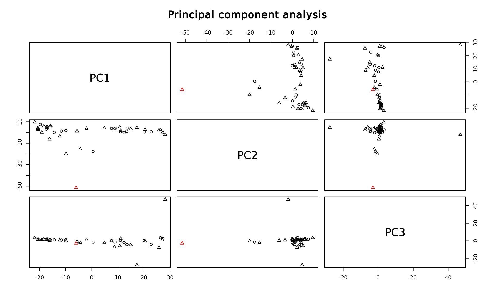
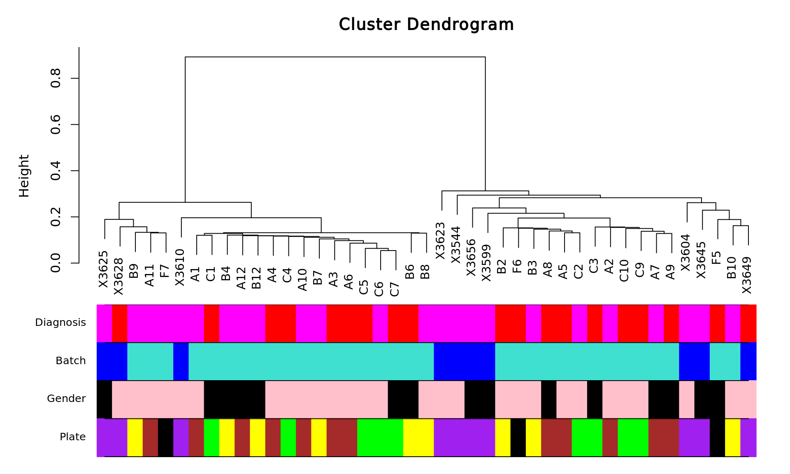
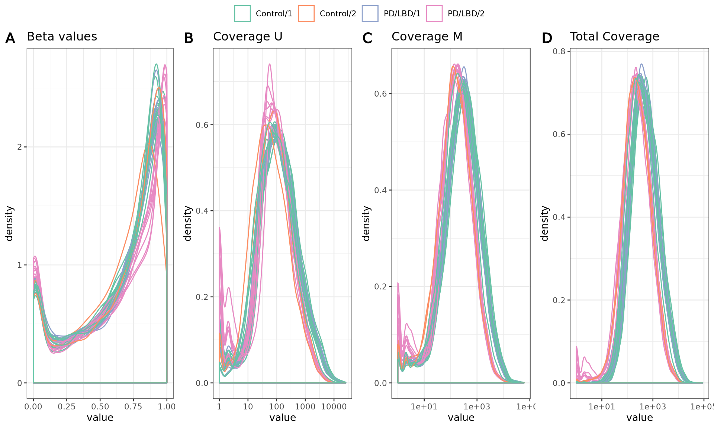
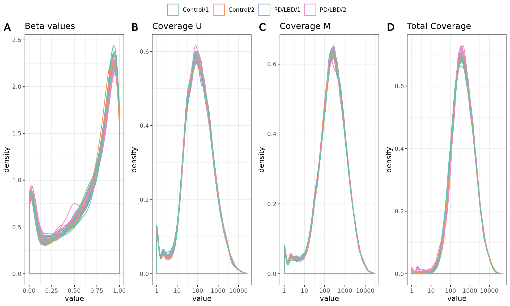
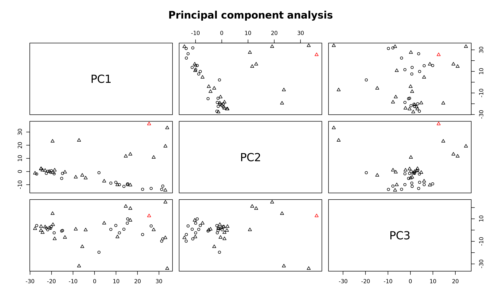
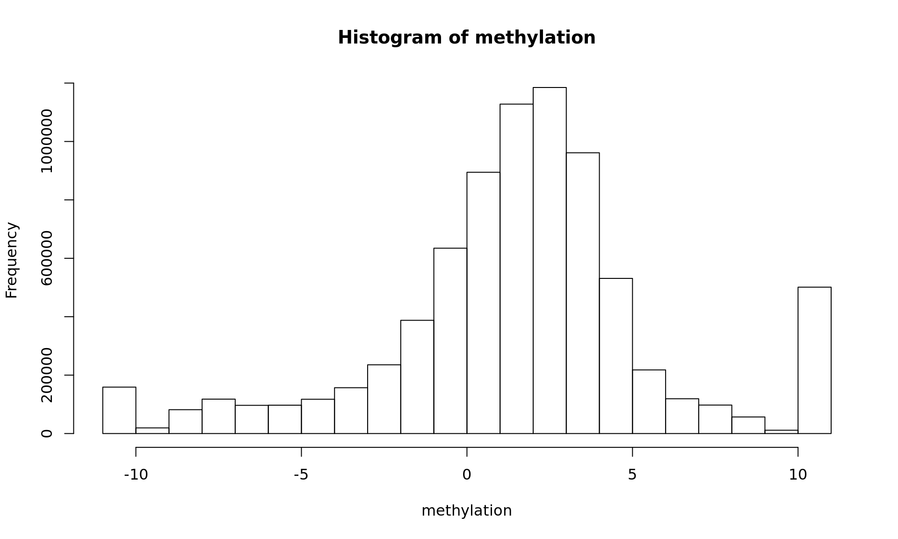
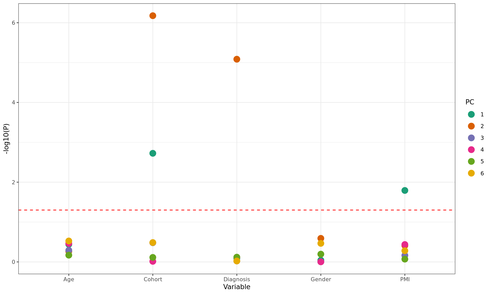
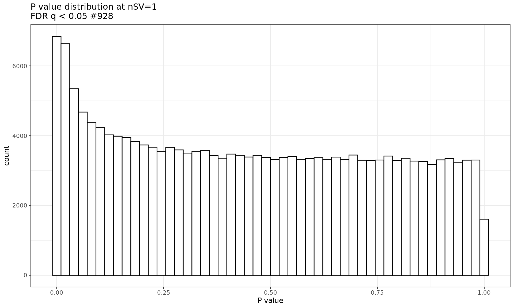
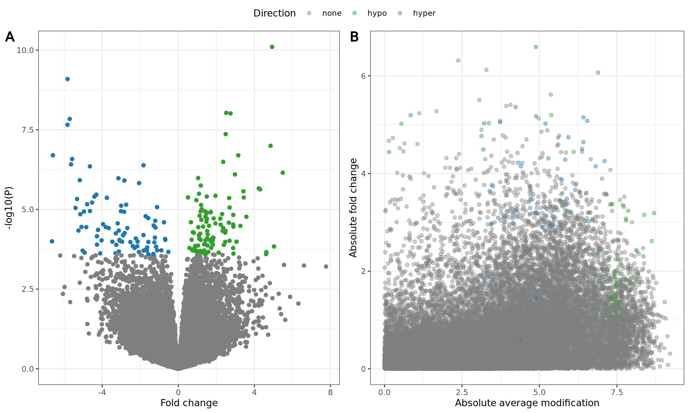
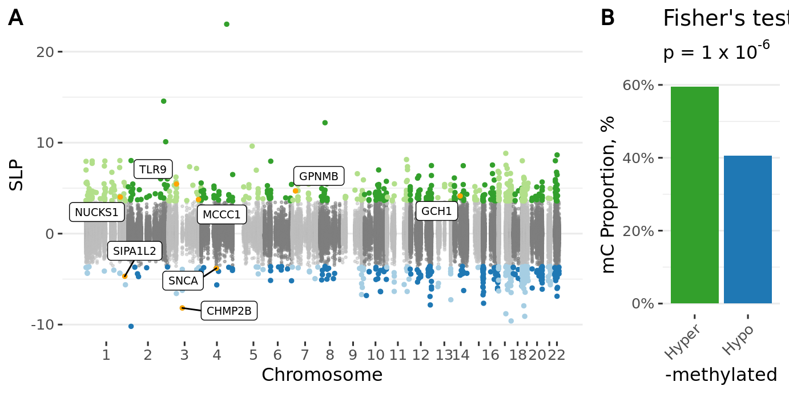

Appendix PD vs Controls, Padlocks
Parameters
## {
## "host": "node113",
## "nPerm": 40,
## "workers": 41,
## "outliers": {
## "thresholdSD": 3,
## "noOfPCs": 2,
## "removeOutliers": true,
## "shape": "Diagnosis"
## },
## "clustering": {
## "groups": ["Diagnosis", "Batch", "Sex", "substr(ID, 1, 1)"],
## "addClustersToModel": 0
## },
## "normalization": {
## "normalize": true,
## "plotColor": ["Diagnosis", "Batch"]
## },
## "imputation": {
## "imputeBetas": false,
## "imputeCounts": false
## },
## "model": {
## "formula": "~ Diagnosis + .",
## "formula0": "~ . - Diagnosis",
## "svRange": [1, 2, 3, 4, 5, 6]
## }
## }Data
From directory PD_Appendix_padloc_01172019, the beta and count matrices provided by Peipei. Technical replicates were combined by averaging and rounding their M and U counts. Beta values were already averaged.
Resulting data structure:
## sample beta genome counts countsU countsM modelData
## [1,] 44 186080 186080 186080 186080 186080 44
## [2,] 6 44 6 44 44 44 5Analysis
Outlier identification

| ID | Age | Sex | PMI | Diagnosis | Batch |
|---|---|---|---|---|---|
| X3616 | 87 | M | 18 | PD/LBD | 2 |
Outliers have been removed.
[1] “untouched tables: genome”
Sample clustering
Hierarchical clustering using correlations as similarity measure and Ward linkage.

Normalization
Signal density before normalization

NU and M matrices were quantile normalized separately, total counts and beta values were obtained from normalized matrices.
Signals after normalization
PCA and outliers after normalization

Covariates
Covariates used in subsequent models
## [1] "Diagnosis" "Age" "Gender" "PMI" "Cohort"Are any of the covariates related to the variable of interest? (Assuming that the first variable in modelData is the one of interest).
##
## Call:
## glm(formula = formula, family = "binomial", data = data$modelData)
##
## Deviance Residuals:
## Min 1Q Median 3Q Max
## -2.3085 -0.8423 0.5606 0.8336 1.7668
##
## Coefficients:
## Estimate Std. Error z value Pr(>|z|)
## (Intercept) -7.44857 3.10950 -2.395 0.0166 *
## Age 0.09126 0.03906 2.336 0.0195 *
## GenderM 0.24555 0.73720 0.333 0.7391
## PMI 0.01940 0.03181 0.610 0.5419
## Cohort2 1.31004 0.90441 1.449 0.1475
## ---
## Signif. codes: 0 '***' 0.001 '**' 0.01 '*' 0.05 '.' 0.1 ' ' 1
##
## (Dispersion parameter for binomial family taken to be 1)
##
## Null deviance: 59.028 on 42 degrees of freedom
## Residual deviance: 48.507 on 38 degrees of freedom
## AIC: 58.507
##
## Number of Fisher Scoring iterations: 3Robust lmFit
50% stable, non extreme change, M values, robust limma eBayes
methylation <- data$beta
prefix <- "m6_"
modelparams <- list(
allowStable = 0.5,
useMvalues = TRUE,
fixInfinity = 0.001, # Fraction of change for 0% and 100% methylated locations
downloadDataMatrix = TRUE
)Removal of non-informative loci
Fraction of CGs that should be removed depending on threshold. Currently set threshold is 50%
Removing 4056 stable loci.
Conversion of Beta values to M values
Beta values were converted to M values.

Data download
Download data file.
Data PCs vs Covariates
Fit covariates to the PCs using limma
## Removing intercept from test coefficients| DiagnosisPD.LBD | Age | GenderM | PMI | Cohort2 | AveExpr | F | P.Value | adj.P.Val | |
|---|---|---|---|---|---|---|---|---|---|
| PC2 | 76.904703 | -1.0547219 | -14.7864775 | 0.3016495 | 146.362970 | 0 | 11.1925726 | 0.0000002 | 0.0000016 |
| PC1 | 22.248383 | 2.5607461 | -5.2079937 | 3.1536798 | -162.325266 | 0 | 4.7266008 | 0.0011179 | 0.0055894 |
| PC10 | 14.276310 | 0.2534325 | -52.6082515 | 0.1433894 | -33.344847 | 0 | 1.4622049 | 0.2165833 | 0.7219443 |
| PC7 | 3.450729 | -0.5503676 | 49.9101706 | -0.8809700 | -18.141146 | 0 | 1.2078040 | 0.3173068 | 0.7932670 |
| PC6 | 6.619927 | -1.4137807 | -21.7775736 | 0.8743630 | 29.060463 | 0 | 0.6822517 | 0.6387353 | 0.9854582 |
| PC4 | 1.843375 | -1.2829620 | -0.1692827 | 1.0403035 | 1.294628 | 0 | 0.3870650 | 0.8556474 | 0.9854582 |
| PC3 | 13.016268 | -0.8858720 | -1.7703018 | 0.2443311 | -33.507155 | 0 | 0.3449713 | 0.8833717 | 0.9854582 |
| PC9 | 3.339050 | 0.8389194 | 18.7402740 | -0.3801317 | -9.241741 | 0 | 0.2939885 | 0.9143208 | 0.9854582 |
| PC8 | -4.409340 | 0.0554741 | -14.0074651 | -0.6086494 | -4.742636 | 0 | 0.1515609 | 0.9787557 | 0.9854582 |
| PC5 | -1.775371 | -0.5252749 | 11.8084775 | 0.1424838 | -9.170617 | 0 | 0.1279488 | 0.9854582 | 0.9854582 |
The covariates significantly affecting the PCs using ANOVA:

Select the number of SVs
All known covariates are regressed from data and PCA of residuals is computed. The number of PCs that explain more than 5% of variability is used as the desired number of SVs.
## Selected number of SVs 1Probe-level models
P value distribution
## Warning: Removed 29 rows containing non-finite values (stat_bin).
Volcano plot

Manhattan plot
PDF
Enrichment
| substr | MeanFC | NoSign | OR | P |
|---|---|---|---|---|
| CG | -0.0152209 | 928 | 1.3864 | 1e-06 |
Download
SessionInfo
## R version 3.6.1 (2019-07-05)
## Platform: x86_64-conda_cos6-linux-gnu (64-bit)
## Running under: CentOS Linux 7 (Core)
##
## Matrix products: default
## BLAS/LAPACK: /varidata/research/projects/labrie/juozas/condaenv/ALP/lib/libopenblasp-r0.3.7.so
##
## locale:
## [1] LC_CTYPE=C LC_NUMERIC=C
## [3] LC_TIME=en_US.UTF-8 LC_COLLATE=en_US.UTF-8
## [5] LC_MONETARY=en_US.UTF-8 LC_MESSAGES=en_US.UTF-8
## [7] LC_PAPER=en_US.UTF-8 LC_NAME=C
## [9] LC_ADDRESS=C LC_TELEPHONE=C
## [11] LC_MEASUREMENT=en_US.UTF-8 LC_IDENTIFICATION=C
##
## attached base packages:
## [1] parallel stats graphics grDevices utils datasets methods
## [8] base
##
## other attached packages:
## [1] latex2exp_0.4.0 doSNOW_1.0.18 snow_0.4-3
## [4] itertools_0.1-3 iterators_1.0.12 limma_3.42.0
## [7] impute_1.60.0 WGCNA_1.69 fastcluster_1.1.25
## [10] dynamicTreeCut_1.63-1 glue_1.4.1 foreach_1.5.0
## [13] ggpubr_0.3.0 plotly_4.9.2.1 ggplot2_3.3.1
## [16] dplyr_1.0.0 data.table_1.12.8 kableExtra_1.1.0
## [19] knitr_1.28 shiny_1.4.0.2
##
## loaded via a namespace (and not attached):
## [1] colorspace_1.4-1 ggsignif_0.6.0 ellipsis_0.3.1
## [4] rio_0.5.16 htmlTable_1.13.3 base64enc_0.1-3
## [7] rstudioapi_0.11 farver_2.0.3 ggrepel_0.8.2
## [10] bit64_0.9-7 AnnotationDbi_1.48.0 xml2_1.3.2
## [13] codetools_0.2-16 splines_3.6.1 doParallel_1.0.15
## [16] Formula_1.2-3 jsonlite_1.6.1 broom_0.5.6
## [19] cluster_2.1.0 GO.db_3.10.0 png_0.1-7
## [22] readr_1.3.1 compiler_3.6.1 httr_1.4.1
## [25] backports_1.1.8 Matrix_1.2-18 fastmap_1.0.1
## [28] lazyeval_0.2.2 later_1.1.0.1 acepack_1.4.1
## [31] htmltools_0.5.0 tools_3.6.1 gtable_0.3.0
## [34] Rcpp_1.0.4.6 carData_3.0-4 Biobase_2.46.0
## [37] cellranger_1.1.0 vctrs_0.3.1 preprocessCore_1.48.0
## [40] nlme_3.1-148 xfun_0.14 stringr_1.4.0
## [43] openxlsx_4.1.5 rvest_0.3.5 mime_0.9
## [46] lifecycle_0.2.0 rstatix_0.5.0 scales_1.1.1
## [49] hms_0.5.3 promises_1.1.1 RColorBrewer_1.1-2
## [52] yaml_2.2.1 curl_4.3 memoise_1.1.0
## [55] gridExtra_2.3 rpart_4.1-15 latticeExtra_0.6-29
## [58] stringi_1.4.6 RSQLite_2.2.0 highr_0.8
## [61] S4Vectors_0.24.0 checkmate_2.0.0 BiocGenerics_0.32.0
## [64] zip_2.0.4 rlang_0.4.6 pkgconfig_2.0.3
## [67] matrixStats_0.56.0 evaluate_0.14 lattice_0.20-41
## [70] purrr_0.3.4 labeling_0.3 htmlwidgets_1.5.1
## [73] cowplot_1.0.0 bit_1.1-15.2 tidyselect_1.1.0
## [76] magrittr_1.5 R6_2.4.1 IRanges_2.20.0
## [79] generics_0.0.2 Hmisc_4.4-0 DBI_1.1.0
## [82] pillar_1.4.4 haven_2.3.1 foreign_0.8-76
## [85] withr_2.2.0 survival_3.2-3 abind_1.4-5
## [88] nnet_7.3-14 tibble_3.0.1 crayon_1.3.4
## [91] car_3.0-8 rmarkdown_1.18 jpeg_0.1-8.1
## [94] grid_3.6.1 readxl_1.3.1 blob_1.2.1
## [97] forcats_0.5.0 digest_0.6.25 webshot_0.5.2
## [100] xtable_1.8-4 tidyr_1.1.0 httpuv_1.5.4
## [103] stats4_3.6.1 munsell_0.5.0 viridisLite_0.3.0